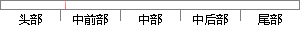

如果顺序错了，程序就会发生错误了。
片段位置图

相似结果
相似片段：加工程序、维护手册及市场宣传等数字信息忉【钔[91...之间的定位关系及组装顺序,如果顺序错了,芯子就无法...否则就会引起缸体的结构发生变化,比如缸体上各个孔...
| 标题 | 《虚拟装配技术在生产实际中的应用研究》 |
| 对比库 | 中国学位论文全文数据库 |
| 作者 | 关龙洪 |
| 机构 | 江苏大学 |
| 分类 | 机械工程 |
| 年份 | 2005 |
| 相似率 | 85.71% （严重抄袭） |
※ 片段修改建议 ※
近似词参考：- 顺序：挨次 按次 递次 次序
- 如果：若是 假如 要是
- 发生：产生
- 程序：法式 步伐
系统自动生成语句：若是挨次错了，法式就会产生错误了。
注：本片段修改建议为系统自动生成，仅供参考。